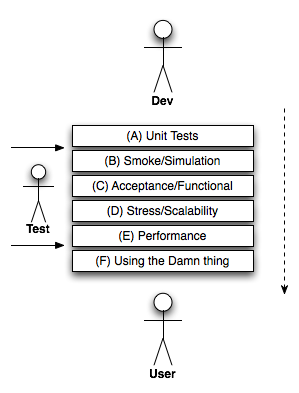
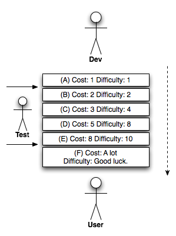

Rappel : Spectre de la conception de Neal Ford.
La dette est une forme de risque.
Elle apporte des bénéfices ou des pertes, selon la quantité d’intérêt à payer.
Le “Hacking Cowboy” 🤠 (s’endetter)
Pour rembourser la dette, on doit
réécrire le code (faire un meilleur design, écrire des tests, “refactor”, etc.)
Accumulation de décision dans le temps qui donne un code de mauvaise qualité et contraint la solution architecturale
Conséquences
Proxy pour dette techniques
Fowler, 2009
| Dette | Imprudente | Prudente |
|---|---|---|
| Délibérée | “On n’a pas le temps pour la conception” | “Faut livrer maintenant puis en assumer les conséquences” |
| Involontaire | “C’est quoi la séparation en couches?” | “Maintenant on sait comment on aurait dû le faire” |
réf.: https://understandlegacycode.com/blog/5-arguments-to-make-managers-care-about-technical-debt/
Essentiellement, il est dans votre intérêt, en tant que développeur, en tant qu’équipe, d’encourager de nombreux tests plus bas dans les piles présentées ici. Cela commence par des tests unitaires complets et vérifiés. Cela continue avec une discipline de test solide et reproductible (pour laquelle je recommande l’automatisation des tests).
Pourquoi? Parce que - lorsque vous vous déplacez plus haut dans la pile, ce fichu bug que quelqu’un a enregistré est caché derrière couche après couche de code. Plus le bogue est éloigné du niveau d’unité, plus les composants et les variables d’environnement sont impliqués. Plus ceux-ci sont impliqués, plus il est difficile d’identifier et de réparer, et plus le coût est élevé.
http://jessenoller.com/blog/2008/09/17/the-cost-of-not-testing-software
 


Coût total : 101250$/mois
3 developpeurs x 21 jours/mois * 16h/jour de test * 5 fois plus rapide = 5040h equivalent
7 developpeurs x 135h/mois = 945h
Êtes-vous d’accord pour dire que le retour sur investissement de l’automatisation des tests est important?
https://github.com/yvanross/LOG210-exercices/blob/master/etat/etat-videoprojecteur.md